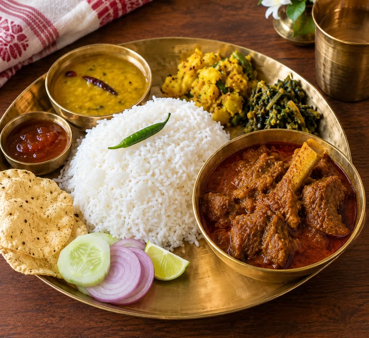
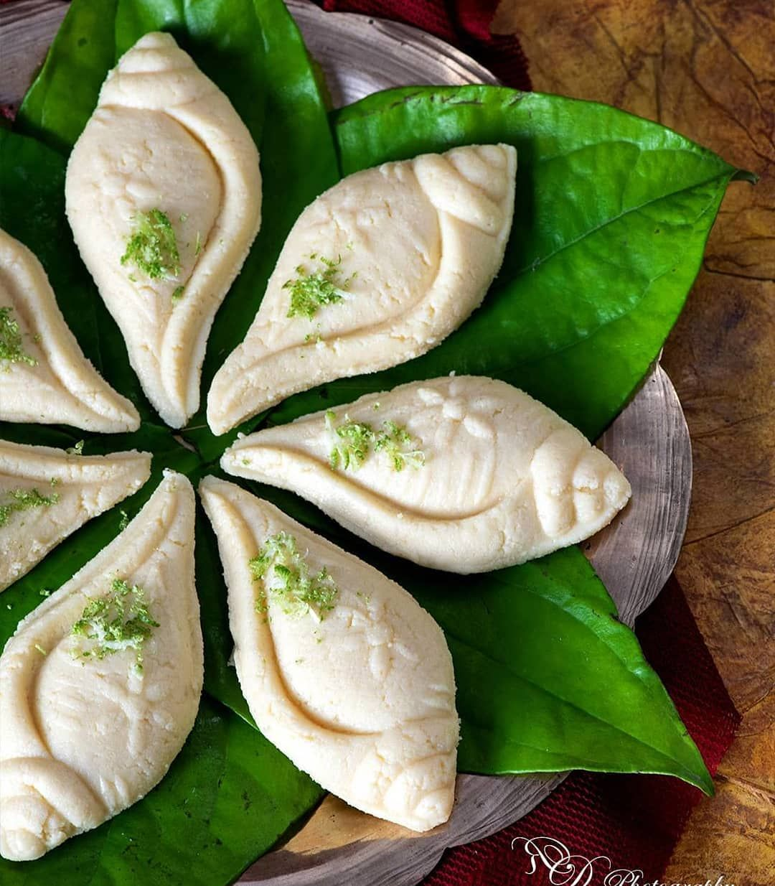

Shorshe Ilish
Hilsa in mustard sauce.
From mustard-rich fish curries to slow-cooked mutton and timeless Bengali sweets, experience the culinary heritage of Bengal in every bite.
Quality ingredients selected
with care.
Authentic Bengali flavours
for generations.
A welcoming dining experience.
Explore some of the most loved dishes of Bengal.
Hilsa in mustard sauce.

Slow-cooked mutton.

A complete feast.

No Bengali feast is complete without traditional sweets.
Discover More
Soft & spongy.

Creamy delight.

A timeless classic.